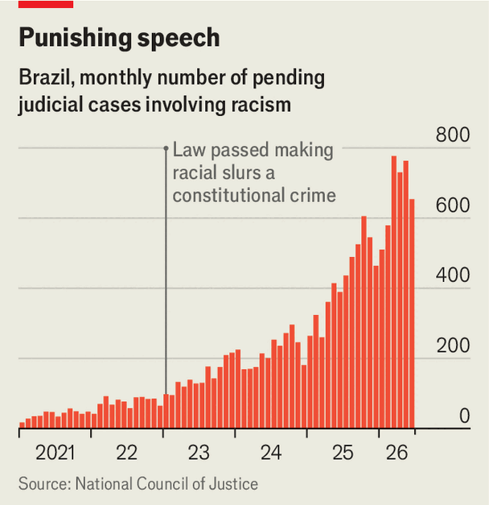

Brazil has the world’s strictest laws against racist speech
But it is unclear what the rocketing number of prosecutions is achieving
Jul 30th 2026
RACIST language is neither new nor uncommon. But around the world governments are showing growing willingness to treat it as a crime. In recent years landmark jail sentences for racist insults have been handed down in Belgium, South Africa and Spain. New laws prohibiting hate speech are on the books in Canada, Australia and Singapore.
No country has gone further than Brazil. In 2021 its Supreme Court issued a ruling equating racial insults, which are directed at an individual, with racism itself, understood as discrimination against an entire group, which is banned under the constitution. Racist slurs became a crime with stiff penalties. Congress subsequently gave the decision statutory effect. The constitution offers no statute of limitations for racism, so offenders can be prosecuted years after the fact. Penalties include jail time and hefty fines.
The number of people prosecuted for racism has increased dramatically, but it is not clear that this is doing much to curb racial inequality or prejudice. Its main achievement may simply be to make Brazil’s judiciary feel virtuous while angering racists even more. As the rest of the world considers how to tackle hate speech, Brazil provides some useful lessons.
Brazil’s zealous laws are a response to a historical wrong. Of the 12m people trafficked from Africa to the Americas between 1501 and 1866, almost 5m disembarked in Brazil, more than anywhere else. Brazil was the last country in the Americas to abolish slavery, in 1888. In recent years a growing black-rights movement has led more Brazilians to identify as preto (black) or pardo (mixed-race or brown) in the census. Today they make up slightly over half the population.

The prosecution of racist speech has been turbocharged. The number of racism cases brought before the courts each month has increased ten-fold since 2021. (see chart) Some 931 people are serving prison sentences for racism or racial abuse—460 of them behind bars, the rest in regimes that let them work outside by day.
Ignorant tourists are being ensnared, too. Five foreigners have been detained for racist speech this year. One, Agostina Páez, a 29-year-old Argentine woman, was filmed making monkey gestures at black bartenders in Rio de Janeiro. Another Argentine, Eduardo Ignacio Murias, took photos of a black child on a train and sent them to a friend on WhatsApp, writing that “I’m thinking of bringing home a slave, there’s so many of them here.” He was arrested after a fellow passenger alerted the child’s mother. Mr Murias is in pre-trial detention in Brazil, while Ms Páez has been allowed to return to Argentina while she awaits trial by a Brazilian court.
Supporters of the new regime point to the publicity around these incidents as one of its benefits. It “shows people what racism looks like and that it is not allowed in our society”, says Alessandra Benedito of the Getulio Vargas Foundation, a university in São Paulo. “These laws make a difference, not just because they punish but because they teach, they raise awareness among the rest of the population.”
Awareness-raising is one thing, but racial inequality remains stark. The World Bank reckons that Brazil is one of the world’s most unequal countries outside southern Africa. In 2021 the census found that the average per person earnings of white households were double those of black or mixed-race households—a gap that has not narrowed since Brazil’s statistics agency began collecting the data in 2012. The hourly wage for black Brazilian women is about 30% lower than that of white men in similar jobs, even after controlling for education, location and sector of employment.
Racist speech is not a primary cause. Brazil’s shoddy public-education system is. The gap between the test scores of public and private secondary-school students is larger in Brazil than anywhere else in Latin America. Richer Brazilians, who tend to be white, do what they can to keep their children out of the public system. Poor grades for those who do attend often lead them to lower-quality universities, to read subjects tending towards lower-paying jobs. Mauricio Reis of the Institute for Applied Economics in Rio de Janeiro reckons this accounts for a third of the gap in median earnings between whites and blacks.
And even as Brazil’s police forces are opening units specialising in racist speech, they are also killing thousands of black people every year. According to the Brazilian Forum for Public Safety, a non-profit that compiles crime statistics, black Brazilians were three and a half times as likely to be killed by the police as white ones in 2025. There is little evidence that the police are targeting non-whites deliberately, rather than tending to police poorer neighbourhoods, but the volume of deaths is staggering. Brazilian police kill nine times more people than do officers in the United States, when adjusted for population size.
Rather than addressing the causes of inequality, Brazil’s muscular hate-speech laws can undermine free speech. In May 2023 a court in São Paulo convicted a comedian, Leonardo Lins, of using racist speech. Mr Lins, who is known for his distasteful jokes, was sentenced to eight years and three months in a high-security prison. He was also ordered to pay fines of 1.7m reais (around $330,000). Only in February did a higher court overturn the conviction. Racist speech is vile. That does not mean it is a good idea to make it illegal. ■